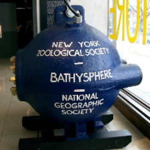

Батисфера
Батисфера — глубоководный обитаемый аппарат в форме сферы, опускаемый на тросе под воду с базового судна. В отличие от последовавших за ней конструкций глубоководных аппаратов, батисфера не имела никакой возможности самостоятельно передвигаться: место погружения определялось местоположением базового судна, глубина погружения регулировалась лебёдками с судна же. У батисферы имеются окна-иллюминаторы для наблюдения за подводным миром. Внутри шара помещаются 1-2 человека, запасы воздуха, научная аппаратура и прибор для связи с поверхностью.
Первый спуск в сферическом привязном аппарате осуществлен итальянцем Бальзамелло в Средиземном море в 1892 году на глубину 165 м. В 1911 году, там же, американский инженер Г. Гартман достиг глубины 458 м. Рекорд глубины, 932 метра, установленный 15 августа 1934 года натуралистом Уильямом Биби (William Beebe) и инженером Отисом Бартоном, продержался 15 лет. Максимальная глубина, достигнутая при помощи батисферы, составляет 1375 метров в 1949 году (пилот — Отис Бартон). Отсутствие у батисферы возможности самостоятельного перемещения и опасность затонуть при обрыве троса привели к тому, что с середины XX века эти аппараты были вытеснены сперва батискафами, а затем мобильными обитаемыми и необитаемыми глубоководными аппаратами иных конструкций.